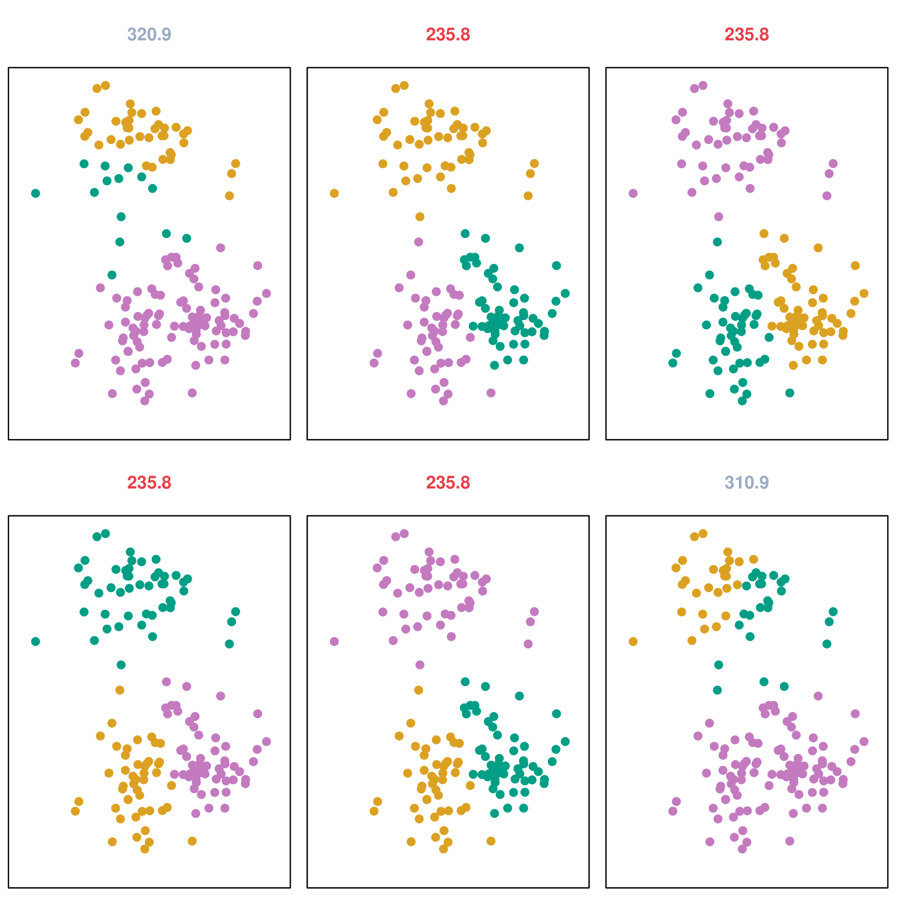
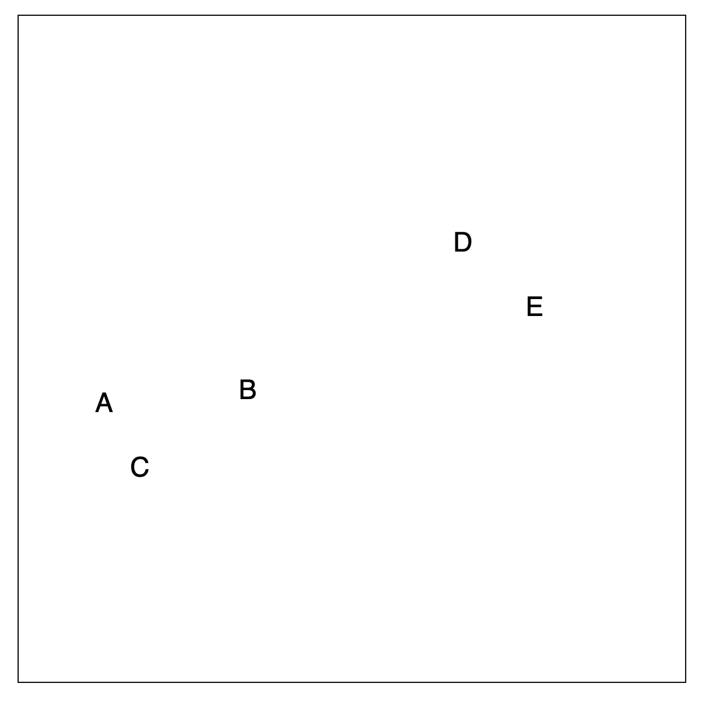
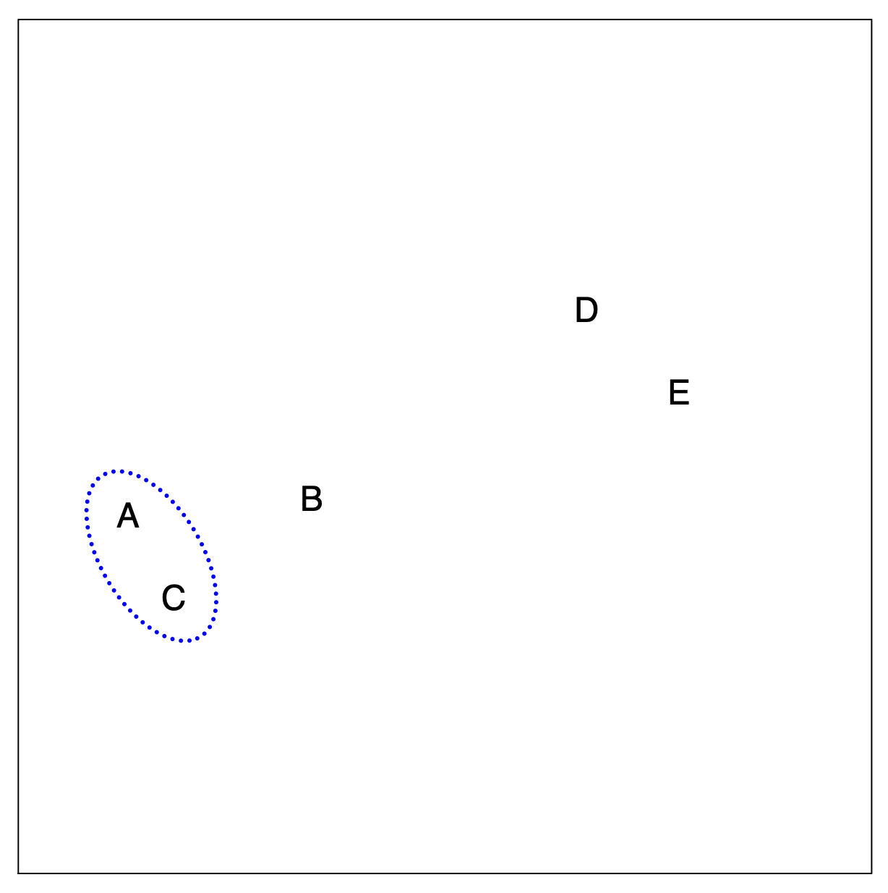
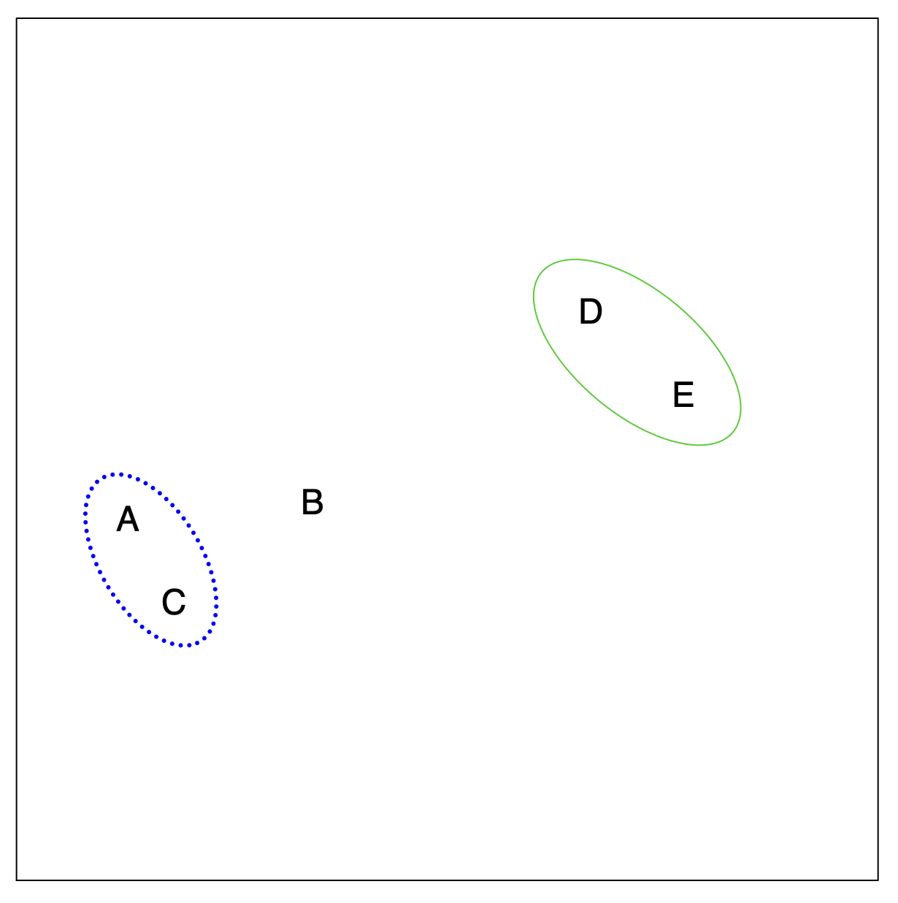
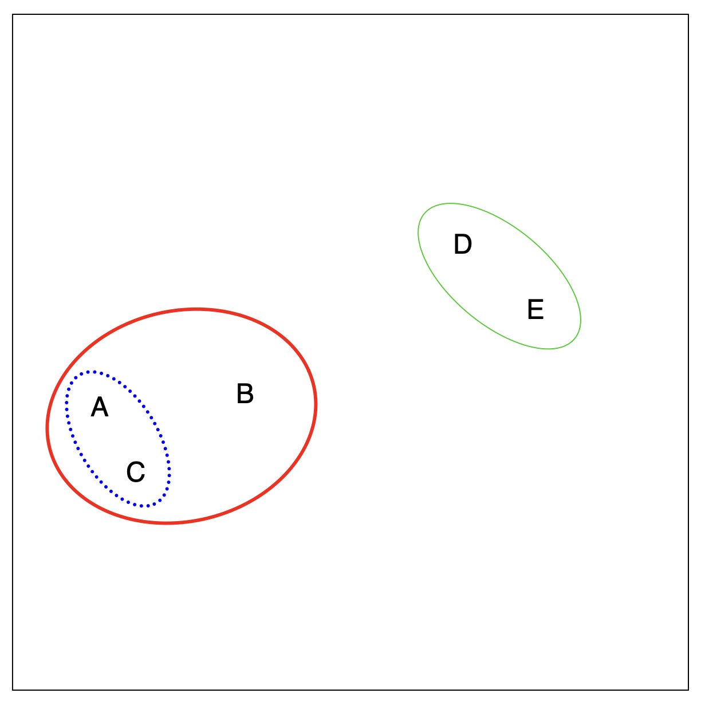
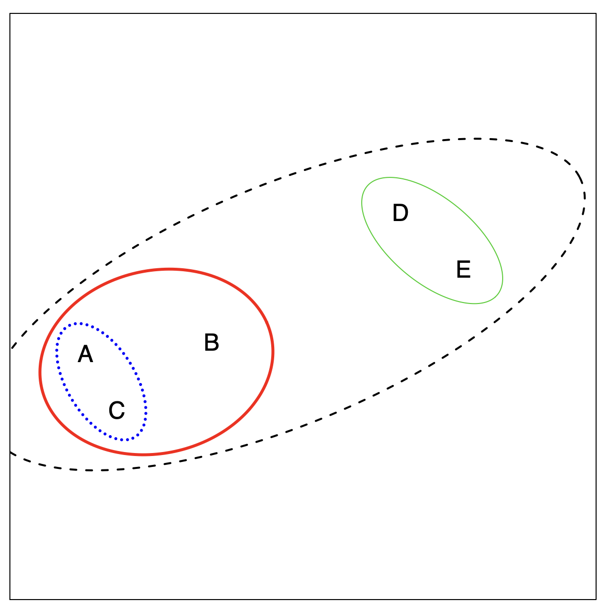
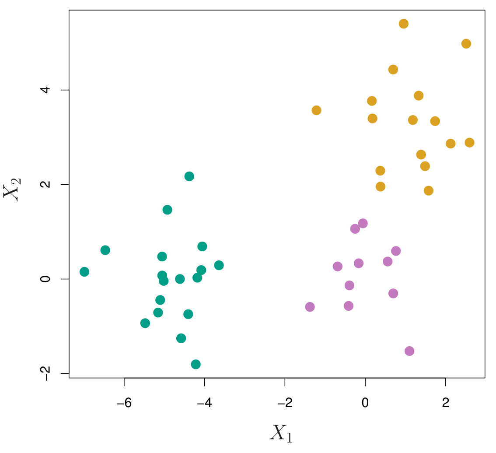
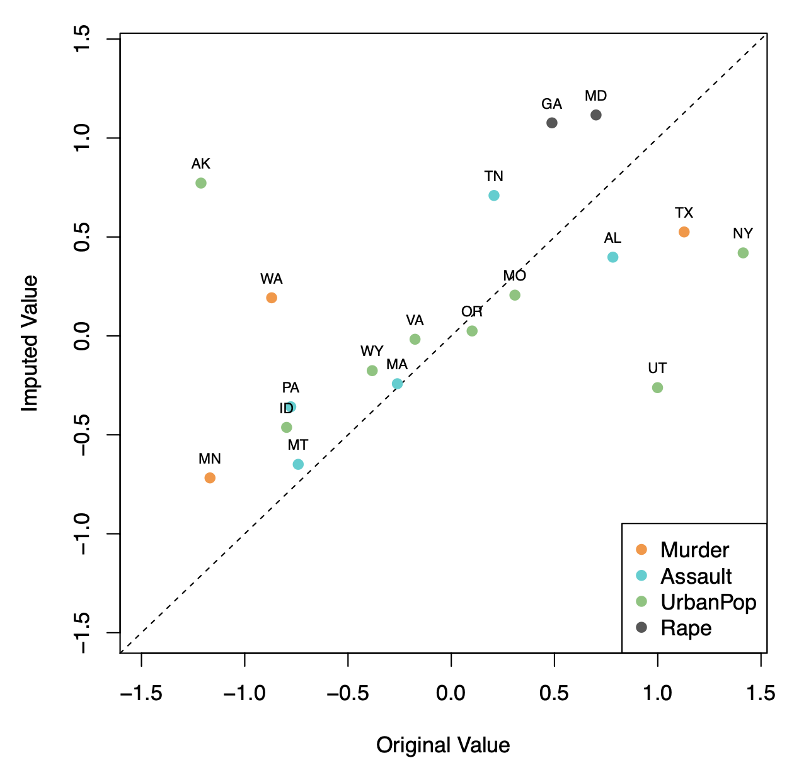

MGMT 47400: Predictive Analytics
Unsupervised Learning
Overview
- XXXX
- XXX
XXX
Unsupervised Learning
Unsupervised vs Supervised Learning:
Most of this course focuses on supervised learning methods such as regression and classification.
In that setting we observe both a set of features \(X_1, X_2, \ldots, X_p\) for each object, as well as a response or outcome variable \(Y\). The goal is then to predict \(Y\) using \(X_1, X_2, \ldots, X_p\).
Here we instead focus on unsupervised learning, where we observe only the features \(X_1, X_2, \ldots, X_p\). We are not interested in prediction, because we do not have an associated response variable \(Y\).
The Goals of Unsupervised Learning
The goal is to discover interesting things about the measurements: is there an informative way to visualize the data? Can we discover subgroups among the variables or among the observations?
We discuss two methods:
principal components analysis, a tool used for data visualization or data pre-processing before supervised techniques are applied, and
clustering, a broad class of methods for discovering unknown subgroups in data.
The Challenge of Unsupervised Learning
Unsupervised learning is more subjective than supervised learning, as there is no simple goal for the analysis, such as prediction of a response.
But techniques for unsupervised learning are of growing importance in a number of fields:
- subgroups of breast cancer patients grouped by their gene expression measurements,
- groups of shoppers characterized by their browsing and purchase histories,
- movies grouped by the ratings assigned by movie viewers.
Another advantage
It is often easier to obtain unlabeled data — from a lab instrument or a computer — than labeled data, which can require human intervention.
For example, it is difficult to automatically assess the overall sentiment of a movie review: is it favorable or not?
Principal Components Analysis
- PCA produces a low-dimensional representation of a dataset. It finds a sequence of linear combinations of the variables that have maximal variance, and are mutually uncorrelated.
- Apart from producing derived variables for use in supervised learning problems, PCA also serves as a tool for data visualization.
Principal Components Analysis: details
- The first principal component of a set of features \(X_1, X_2, \ldots, X_p\) is the normalized linear combination of the features
\[ Z_1 = \phi_{11}X_1 + \phi_{21}X_2 + \ldots + \phi_{p1}X_p \]
that has the largest variance. By normalized, we mean that \(\sum_{j=1}^p \phi_{j1}^2 = 1\).
- We refer to the elements \(\phi_{11}, \ldots, \phi_{p1}\) as the loadings of the first principal component; together, the loadings make up the principal component loading vector,
\[ \phi_1 = (\phi_{11}, \phi_{21}, \ldots, \phi_{p1})^T. \]
- We constrain the loadings so that their sum of squares is equal to one, since otherwise setting these elements to be arbitrarily large in absolute value could result in an arbitrarily large variance.
PCA: example

The population size (pop) and ad spending (ad) for 100 different cities are shown as purple circles. The green solid line indicates the first principal component direction, and the blue dashed line indicates the second principal component direction.
Computation of Principal Components
Suppose we have a \(n \times p\) data set \(\mathbf{X}\). Since we are only interested in variance, we assume that each of the variables in \(\mathbf{X}\) has been centered to have mean zero (that is, the column means of \(\mathbf{X}\) are zero).
We then look for the linear combination of the sample feature values of the form \[ z_{i1} = \phi_{11}x_{i1} + \phi_{21}x_{i2} + \ldots + \phi_{p1}x_{ip} \tag{1} \]
for \(i = 1, \ldots, n\) that has the largest sample variance, subject to the constraint that \(\sum_{j=1}^p \phi_{j1}^2 = 1\).
Since each of the \(x_{ij}\) has mean zero, then so does \(z_{i1}\) (for any values of \(\phi_{j1}\)). Hence the sample variance of the \(z_{i1}\) can be written as
\[ \frac{1}{n} \sum_{i=1}^n z_{i1}^2. \]
Computation: continued
- Plugging in (1) the first principal component loading vector solves the optimization problem
\[ \text{maximize}_{\phi_{11}, \ldots, \phi_{p1}} \frac{1}{n} \sum_{i=1}^n \left( \sum_{j=1}^p \phi_{j1} x_{ij} \right)^2 \quad \text{subject to} \quad \sum_{j=1}^p \phi_{j1}^2 = 1. \]
This problem can be solved via a singular-value decomposition of the matrix \(\mathbf{X}\), a standard technique in linear algebra.
We refer to \(Z_1\) as the first principal component, with realized values \(z_{11}, \ldots, z_{n1}\).
Geometry of PCA
The loading vector \(\phi_1\) with elements \(\phi_{11}, \phi_{21}, \ldots, \phi_{p1}\) defines a direction in feature space along which the data vary the most.
If we project the \(n\) data points \(x_1, \ldots, x_n\) onto this direction, the projected values are the principal component scores \(z_{11}, \ldots, z_{n1}\) themselves.
Further principal components
The second principal component is the linear combination of \(X_1, \ldots, X_p\) that has maximal variance among all linear combinations that are uncorrelated with \(Z_1\).
The second principal component scores \(z_{12}, z_{22}, \ldots, z_{n2}\) take the form
\[ z_{i2} = \phi_{12}x_{i1} + \phi_{22}x_{i2} + \ldots + \phi_{p2}x_{ip}, \]
where \(\phi_2\) is the second principal component loading vector, with elements \(\phi_{12}, \phi_{22}, \ldots, \phi_{p2}\).
Further principal components: continued
It turns out that constraining \(Z_2\) to be uncorrelated with \(Z_1\) is equivalent to constraining the direction \(\phi_2\) to be orthogonal (perpendicular) to the direction \(\phi_1\). And so on.
The principal component directions \(\phi_1, \phi_2, \phi_3, \ldots\) are the ordered sequence of right singular vectors of the matrix \(\mathbf{X}\), and the variances of the components are \(\frac{1}{n}\) times the squares of the singular values. There are at most \(\min(n - 1, p)\) principal components.
Illustration
USArrests data: For each of the fifty states in the United States, the data set contains the number of arrests per 100,000 residents for each of three crimes: Assault, Murder, and Rape. We also record UrbanPop (the percent of the population in each state living in urban areas).
The principal component score vectors have length \(n = 50\), and the principal component loading vectors have length \(p = 4\).
PCA was performed after standardizing each variable to have mean zero and standard deviation one.
USArrests data: PCA plot

The PCA plot shows the first and second principal components for the USArrests dataset, with arrows indicating the loadings for the variables UrbanPop, Rape, Assault, and Murder. State names are displayed based on their principal component scores.
Figure details
The first two principal components for the USArrests data.
The blue state names represent the scores for the first two principal components.
The orange arrows indicate the first two principal component loading vectors (with axes on the top and right). For example, the loading for Rape on the first component is 0.54, and its loading on the second principal component is 0.17 [the word Rape is centered at the point (0.54, 0.17)].
This figure is known as a biplot, because it displays both the principal component scores and the principal component loadings.
PCA loadings
| PC1 | PC2 | |
|---|---|---|
| Murder | 0.5358995 | -0.4181809 |
| Assault | 0.5831836 | -0.1879856 |
| UrbanPop | 0.2781909 | 0.8728062 |
| Rape | 0.5434321 | 0.1673186 |
Another Interpretation of Principal Components

The left plot shows a 3D visualization with projections onto the first two principal components, while the right plot displays the data in 2D using the first and second principal components.
PCA find the hyperplane closest to the observations
The first principal component loading vector has a very special property: it defines the line in \(p\)-dimensional space that is closest to the \(n\) observations (using average squared Euclidean distance as a measure of closeness).
The notion of principal components as the dimensions that are closest to the \(n\) observations extends beyond just the first principal component.
For instance, the first two principal components of a data set span the plane that is closest to the \(n\) observations, in terms of average squared Euclidean distance.
Scaling of the variables matters
If the variables are in different units, scaling each to have standard deviation equal to one is recommended.
If they are in the same units, you might or might not scale the variables.
Proportion Variance Explained
To understand the strength of each component, we are interested in knowing the proportion of variance explained (PVE) by each one.
The total variance present in a data set (assuming that the variables have been centered to have mean zero) is defined as
\[ \sum_{j=1}^p \text{Var}(X_j) = \sum_{j=1}^p \frac{1}{n} \sum_{i=1}^n x_{ij}^2, \]
and the variance explained by the \(m\)-th principal component is
\[ \text{Var}(Z_m) = \frac{1}{n} \sum_{i=1}^n z_{im}^2. \]
- It can be shown that
\[ \sum_{j=1}^p \text{Var}(X_j) = \sum_{m=1}^M \text{Var}(Z_m), \]
with \(M = \min(n-1, p)\).
Proportion Variance Explained: continued
- Therefore, the PVE of the \(m\)-th principal component is given by the positive quantity between 0 and 1:
\[ \frac{\sum_{i=1}^n z_{im}^2}{\sum_{j=1}^p \sum_{i=1}^n x_{ij}^2}. \]
- The PVEs sum to one. We sometimes display the cumulative PVEs.

How many principal components should we use?
If we use principal components as a summary of our data, how many components are sufficient?
No simple answer to this question, as cross-validation is not available for this purpose.
Why not?
When could we use cross-validation to select the number of components?
The “scree plot” on the previous slide can be used as a guide: we look for an “elbow”.
Clustering
Clustering refers to a very broad set of techniques for finding subgroups, or clusters, in a data set.
We seek a partition of the data into distinct groups so that the observations within each group are quite similar to each other.
To make this concrete, we must define what it means for two or more observations to be similar or different.
Indeed, this is often a domain-specific consideration that must be made based on knowledge of the data being studied.
PCA vs Clustering
PCA looks for a low-dimensional representation of the observations that explains a good fraction of the variance.
Clustering looks for homogeneous subgroups among the observations.
Clustering for Market Segmentation
Suppose we have access to a large number of measurements (e.g., median household income, occupation, distance from nearest urban area, and so forth) for a large number of people.
Our goal is to perform market segmentation by identifying subgroups of people who might be more receptive to a particular form of advertising, or more likely to purchase a particular product.
The task of performing market segmentation amounts to clustering the people in the data set.
Two clustering methods
In K-means clustering, we seek to partition the observations into a pre-specified number of clusters.
In hierarchical clustering, we do not know in advance how many clusters we want; in fact, we end up with a tree-like visual representation of the observations, called a dendrogram, that allows us to view at once the clusterings obtained for each possible number of clusters, from 1 to \(n\).
K-means clustering

A simulated data set with 150 observations in 2-dimensional space. Panels show the results of applying K-means clustering with different values of \(K\), the number of clusters. The color of each observation indicates the cluster to which it was assigned using the K-means clustering algorithm. Note that there is no ordering of the clusters, so the cluster coloring is arbitrary. These cluster labels were not used in clustering; instead, they are the outputs of the clustering procedure.
Details of K-means clustering
Let \(C_1, \ldots, C_K\) denote sets containing the indices of the observations in each cluster. These sets satisfy two properties:
\(C_1 \cup C_2 \cup \ldots \cup C_K = \{1, \ldots, n\}\). In other words, each observation belongs to at least one of the \(K\) clusters.
\(C_k \cap C_{k'} = \emptyset\) for all \(k \neq k'\). In other words, the clusters are non-overlapping: no observation belongs to more than one cluster.
For instance, if the \(i\)-th observation is in the \(k\)-th cluster, then \(i \in C_k\).
Details of K-means clustering: continued
The idea behind K-means clustering is that a good clustering is one for which the within-cluster variation is as small as possible.
The within-cluster variation for cluster \(C_k\) is a measure \(\text{WCV}(C_k)\) of the amount by which the observations within a cluster differ from each other.
Hence, we want to solve the problem:
\[ \text{minimize}_{C_1, \ldots, C_K} \left\{ \sum_{k=1}^K \text{WCV}(C_k) \right\}. \]
- In words, this formula says that we want to partition the observations into \(K\) clusters such that the total within-cluster variation, summed over all \(K\) clusters, is as small as possible.
How to Define Within-Cluster Variation?
- Typically, we use Euclidean distance:
\[ \text{WCV}(C_k) = \frac{1}{|C_k|} \sum_{i,i' \in C_k} \sum_{j=1}^p (x_{ij} - x_{i'j})^2, \tag{3} \]
where \(|C_k|\) denotes the number of observations in the \(k\)-th cluster.
- Combining (2) and (3) gives the optimization problem that defines K-means clustering:
\[ \text{minimize}_{C_1, \ldots, C_K} \left\{ \sum_{k=1}^K \frac{1}{|C_k|} \sum_{i,i' \in C_k} \sum_{j=1}^p (x_{ij} - x_{i'j})^2 \right\}. \tag{4} \]
K-Means Clustering Algorithm
Randomly assign a number, from 1 to \(K\), to each of the observations. These serve as initial cluster assignments for the observations.
Iterate until the cluster assignments stop changing:
2.1 For each of the \(K\) clusters, compute the cluster centroid.
The \(k\)-th cluster centroid is the vector of the \(p\) feature means for the observations in the \(k\)-th cluster.2.2 Assign each observation to the cluster whose centroid is closest (where closest is defined using Euclidean distance).
Properties of the Algorithm
- This algorithm is guaranteed to decrease the value of the objective (4) at each step. Why? Note that
\[ \frac{1}{|C_k|} \sum_{i,i' \in C_k} \sum_{j=1}^p (x_{ij} - x_{i'j})^2 = 2 \sum_{i \in C_k} \sum_{j=1}^p (x_{ij} - \bar{x}_{kj})^2, \]
where \(\bar{x}_{kj} = \frac{1}{|C_k|} \sum_{i \in C_k} x_{ij}\) is the mean for feature \(j\) in cluster \(C_k\).
- However, it is not guaranteed to give the global minimum. Why not?
Example

Details of Previous Figure
Top left: The observations are shown.
Top center: In Step 1 of the algorithm, each observation is randomly assigned to a cluster.
Top right: In Step 2(a), the cluster centroids are computed. These are shown as large colored disks. Initially, the centroids are almost completely overlapping because the initial cluster assignments were chosen at random.
Bottom left: In Step 2(b), each observation is assigned to the nearest centroid.
Bottom center: Step 2(a) is once again performed, leading to new cluster centroids.
Bottom right: The results obtained after 10 iterations.
Example: Different Starting Values
Details of Previous Figure
K-means clustering was performed six times on the data from the previous figure with \(K = 3\), each time with a different random assignment of the observations in Step 1 of the K-means algorithm.
Above each plot is the value of the objective (4).
Three different local optima were obtained, one of which resulted in a smaller value of the objective and provides better separation between the clusters.
Those labeled in red all achieved the same best solution, with an objective value of 235.8.
Hierarchical Clustering
K-means clustering requires us to pre-specify the number of clusters \(K\). This can be a disadvantage (later we discuss strategies for choosing \(K\)).
Hierarchical clustering is an alternative approach which does not require that we commit to a particular choice of \(K\).
In this section, we describe bottom-up or agglomerative clustering. This is the most common type of hierarchical clustering and refers to the fact that a dendrogram is built starting from the leaves and combining clusters up to the trunk.
Hierarchical Clustering: The Idea
Builds a hierarchy in a “bottom-up” fashion…
Step 1
Hierarchical Clustering: The Idea (Step 2)
Merging Closest Observations
Hierarchical Clustering: The Idea (Step 3)
Merging Another Closest Pair
Hierarchical Clustering: The Idea (Step 4)
Expanding the Hierarchy
Hierarchical Clustering: The Idea (Final Step)
Single Cluster Representation
Hierarchical Clustering Algorithm
The approach in words:
Start with each point in its own cluster.
Identify the closest two clusters and merge them.
Repeat.
Ends when all points are in a single cluster.
An Example
45 observations generated in 2-dimensional space.
In reality, there are three distinct classes, shown in separate colors.
However, we will treat these class labels as unknown and will seek to cluster the observations in order to discover the classes from the data.
Application of Hierarchical Clustering

This slide visualizes the application of hierarchical clustering on data.
Each dendrogram represents different stages or thresholds for determining clusters.
The dashed horizontal lines indicate where the data is split into distinct clusters.
Details of Previous Figure
Left: Dendrogram obtained from hierarchically clustering the data from the previous slide, using complete linkage and Euclidean distance.
Center: The dendrogram from the left-hand panel, cut at a height of 9 (indicated by the dashed line). This cut results in two distinct clusters, shown in different colors.
Right: The dendrogram from the left-hand panel, now cut at a height of 5. This cut results in three distinct clusters, shown in different colors. Note that the colors were not used in clustering, but are simply used for display purposes in this figure.
Types of Linkage
| Linkage | Description |
|---|---|
| Complete | Maximal inter-cluster dissimilarity. Compute all pairwise dissimilarities between the observations in cluster A and the observations in cluster B, and record the largest of these dissimilarities. |
| Single | Minimal inter-cluster dissimilarity. Compute all pairwise dissimilarities between the observations in cluster A and the observations in cluster B, and record the smallest of these dissimilarities. |
| Average | Mean inter-cluster dissimilarity. Compute all pairwise dissimilarities between the observations in cluster A and the observations in cluster B, and record the average of these dissimilarities. |
| Centroid | Dissimilarity between the centroid for cluster A (a mean vector of length p) and the centroid for cluster B. Centroid linkage can result in undesirable inversions. |
Choice of Dissimilarity Measure
So far, have used Euclidean distance.
An alternative is correlation-based distance, which considers two observations to be similar if their features are highly correlated.
This is an unusual use of correlation, which is normally computed between variables; here, it is computed between the observation profiles for each pair of observations.
Practical Issues
Scaling of the variables matters! Should the observations or features first be standardized in some way?
- For instance, maybe the variables should be centered to have mean zero and scaled to have a standard deviation of one.
In the case of hierarchical clustering:
What dissimilarity measure should be used?
What type of linkage should be used?
How many clusters to choose? (in both K-means or hierarchical clustering):
Difficult problem.
No agreed-upon method. See Elements of Statistical Learning, Chapter 13, for more details.
Which features should we use to drive the clustering?
Example: Breast Cancer Microarray Study
“Repeated observation of breast tumor subtypes in independent gene expression data sets;” Sorlie et al., PNAS 2003.
Gene expression measurements for approximately ~8000 genes, for each of 88 breast cancer patients.
Average linkage, correlation metric.
Clustered samples using 500 intrinsic genes:
Each woman was measured before and after chemotherapy.
Intrinsic genes have the smallest within/between variation.
Conclusions
Unsupervised learning is important for understanding the variation and grouping structure of a set of unlabeled data, and can be a useful pre-processor for supervised learning.
It is intrinsically more difficult than supervised learning because there is no gold standard (like an outcome variable) and no single objective (like test set accuracy).
It is an active field of research, with many recently developed tools such as self-organizing maps, independent components analysis, and spectral clustering.
See The Elements of Statistical Learning, chapter 14.
Matrix Completion and Missing Values
Matrix Completion and Missing Values
It is often the case that data matrices X have missing entries, often represented by NAs (not available).
This is a nuisance, since many of our modeling procedures, such as linear regression and GLMs, require complete data.
Sometimes imputation is the prediction problem! — as in recommender systems.
One simple approach is mean imputation — replace missing values for a variable by the mean of the non-missing entries.
This ignores the correlations among variables; we should be able to exploit these correlations when imputing missing values.
We assume values are missing at random; i.e., the missingness should not be informative.
We present an approach based on principal components.
Recommender Systems

Recommender Systems
| Customer | Jerry Maguire | Oceans | Road to Perdition | A Fortunate Man | Catch Me If You Can | Driving Miss Daisy | The Two Popes | The Laundromat | Code 8 | The Social Network | … |
|---|---|---|---|---|---|---|---|---|---|---|---|
| Customer 1 | . | . | . | . | . | . | . | 4 | . | . | … |
| Customer 2 | . | 3 | . | . | . | . | . | 3 | . | 3 | … |
| Customer 3 | . | . | . | 2 | 4 | . | . | . | . | . | … |
| Customer 4 | 3 | . | . | . | . | 2 | . | . | . | . | … |
| Customer 5 | 5 | 1 | . | . | 4 | . | . | . | . | . | … |
| Customer 6 | . | . | . | 2 | . | . | 4 | . | . | . | … |
| Customer 7 | . | . | . | . | 5 | . | . | . | 3 | . | … |
| Customer 8 | . | . | . | . | . | . | . | . | . | . | … |
| Customer 9 | 3 | . | . | . | . | . | . | 5 | . | 1 | … |
| … | … | … | … | … | … | … | … | … | … | … | … |
Netflix users rate movies they have seen, usually a very small fraction of available movies.
Predicting missing ratings provides a way to recommend movies to users. Matrix completion is one of the primary tools.
Matrix Approximation via Principal Components
- In Section 12.2.2 we gave an interpretation of principal components in terms of matrix approximation:
\[ \text{minimize}_{\mathbf{A} \in \mathbb{R}^{n \times M}, \mathbf{B} \in \mathbb{R}^{p \times M}} \left\{ \sum_{j=1}^p \sum_{i=1}^n \left( x_{ij} - \sum_{m=1}^M a_{im}b_{jm} \right)^2 \right\}. \]
\(\mathbf{A}\) is an \(n \times M\) matrix whose \((i, m)\) element is \(a_{im}\), and \(\mathbf{B}\) is a \(p \times M\) matrix whose \((j, m)\) element is \(b_{jm}\).
It can be shown that for any value of \(M\), the first \(M\) principal components provide a solution: \[ \hat{a}_{im} = z_{im} \quad \text{and} \quad \hat{b}_{jm} = \phi_{jm}. \]
But what to do if the matrix has missing elements?
Matrix Completion via Principal Components
We pose instead a modified version of the approximation criterion:
\[ \text{minimize}_{\mathbf{A} \in \mathbb{R}^{n \times M}, \mathbf{B} \in \mathbb{R}^{p \times M}} \left\{ \sum_{(i,j) \in \mathcal{O}} \left( x_{ij} - \sum_{m=1}^M a_{im}b_{jm} \right)^2 \right\}, \]
where \(\mathcal{O}\) is the set of all observed pairs of indices \((i, j)\), a subset of the possible \(n \times p\) pairs.
Once we solve this problem:
- We can estimate a missing observation \(x_{ij}\) using:
\[ \hat{x}_{ij} = \sum_{m=1}^M \hat{a}_{im}\hat{b}_{jm}, \]
where \(\hat{a}_{im}\) and \(\hat{b}_{jm}\) are the \((i,m)\) and \((j,m)\) elements of the solution matrices \(\mathbf{\hat{A}}\) and \(\mathbf{\hat{B}}\).
- We can (approximately) recover the \(M\) principal component scores and loadings, as if data were complete.
Iterative Algorithm for Matrix Completion
Initialize: create a complete data matrix \(\tilde{\mathbf{X}}\) by filling in the missing values using mean imputation.
Repeat: steps (a)–(c) until the objective in (c) fails to decrease:
\[ \text{minimize}_{\mathbf{A} \in \mathbb{R}^{n \times M}, \mathbf{B} \in \mathbb{R}^{p \times M}} \left\{ \sum_{j=1}^p \sum_{i=1}^n \left( \tilde{x}_{ij} - \sum_{m=1}^M a_{im}b_{jm} \right)^2 \right\}, \]
by computing the principal components of $\tilde{\mathbf{X}}$.
- (b) For each missing entry $(i, j) \notin \mathcal{O}$, set:\[ \tilde{x}_{ij} \leftarrow \sum_{m=1}^M \hat{a}_{im} \hat{b}_{jm}. \]
- (c) Compute the objective:\[ \sum_{(i,j) \in \mathcal{O}} \left( x_{ij} - \sum_{m=1}^M \hat{a}_{im} \hat{b}_{jm} \right)^2. \]
- Return the estimated missing entries \(\tilde{x}_{ij}\), \((i, j) \notin \mathcal{O}\).
Example: USAarrests Data
Here \(\mathbf{X}\) has 50 rows (states) and four columns: Murder, Assault, Rape, and UrbanPop.
We selected 20 states at random, and for each, we selected one of the variables at random, and set its value to NA.
Used \(M = 1\) principal component in the algorithm.
Correlation: 0.63 between original and imputed values.
Example — Continued
The USAarrests data has only four variables, which is on the low end for this method to work well. For this reason, for this demonstration we randomly set at most one variable per state to be missing and only used \(M = 1\) principal component.
In general, in order to apply this algorithm, we must select \(M\), the number of principal components to use for the imputation.
One approach is to randomly set to NA some elements that were actually observed, and select \(M\) based on how well those known values are recovered. This is closely related to the validation-set approach seen in Chapter 5.
softImpute package in R implements matrix completion algorithms and can manage Netflix-scale matrices.
Summary
- XXXX
- XXXX
Thank you!
Predictive Analytics